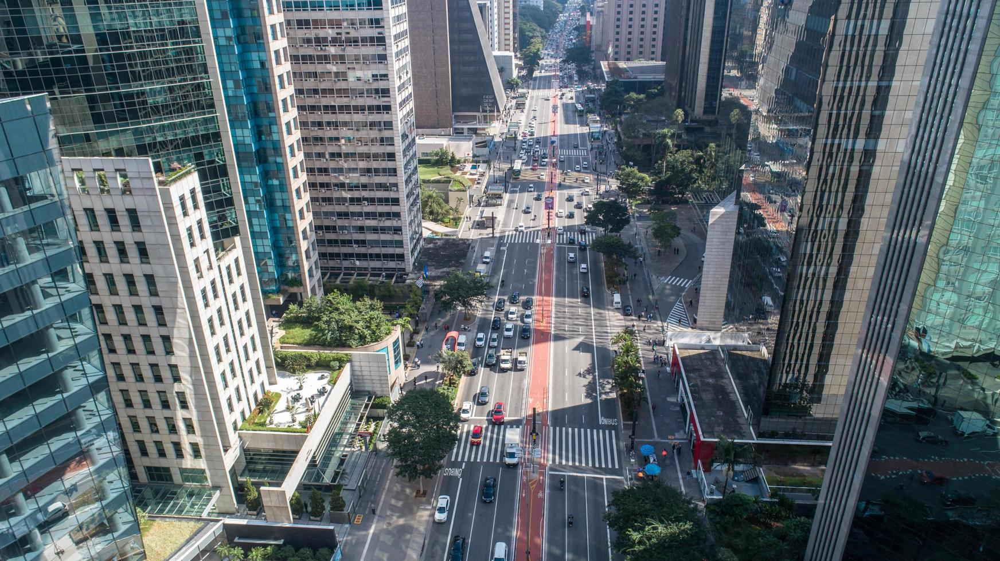
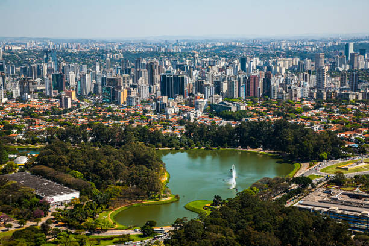
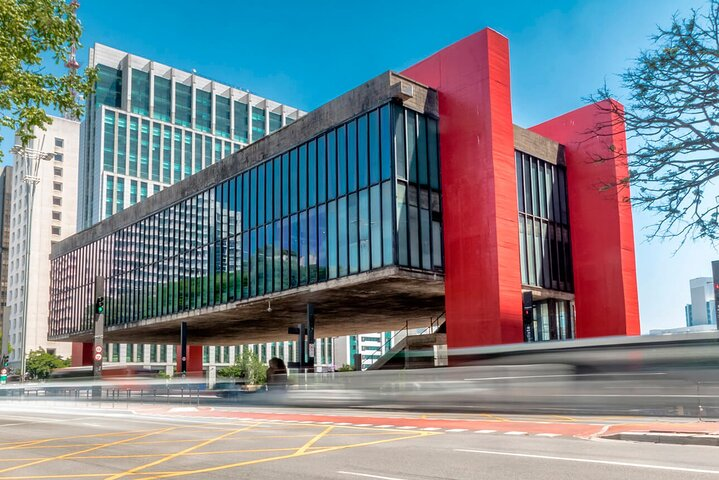
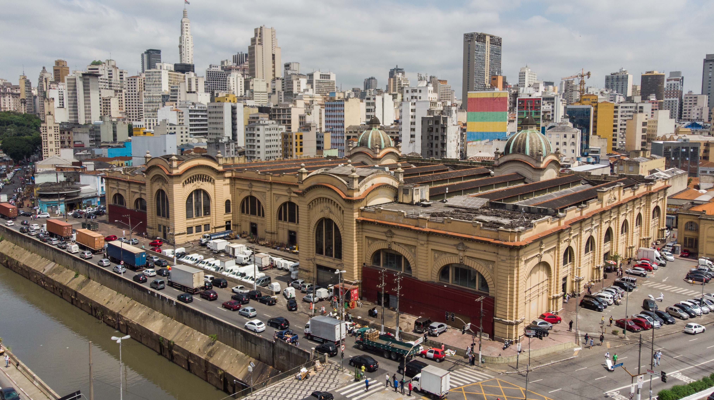

Why Visit São Paulo?
São Paulo is the largest city in Brazil and one of the most dynamic in the world. It's known for its diverse culture, skyscrapers, world-class museums, and a food scene that blends global flavors with Brazilian tradition.
The city offers a rich mix of art, history, nightlife, and commerce — making it a must-visit for travelers who love big cities with character.
Top Attractions in São Paulo
- Avenida Paulista: The city’s main avenue, lined with museums, shopping, and cultural centers.
- Ibirapuera Park: One of the largest city parks in Latin America. Official website
- São Paulo Museum of Art (MASP): Known for its modern architecture and impressive art collection. Visit MASP
- Municipal Market: A must-see for food lovers. Try the famous mortadella sandwich and pastel.




Photos from Wikimedia, vectteezy, istock and peek.
Reference 1 |
REference 2 |
REference 3 |
REference 4 |
REference 5 |